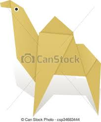

Origami Designs
About Me

some Intreting facts about camel :
- There are two types of camels: One humped or “dromedary” camels and two humped Bactrian camels.
- Camels have three sets of eyelids and two rows of eyelashes to keep sand out of their eyes.
- Camels have thick lips which let them forage for thorny plants other animals can't eat.

some Intreting facts about chameleon :
- THEIR FEET WORK LIKE SALAD TONGS.
- ALMOST HALF OF ALL KNOWN SPECIES LIVE IN MADAGASCAR.
- THEY MAINLY CHANGE COLOR IN ORDER TO COMMUNICATE OR REGULATE BODY TEMPERATURE.

some Intreting facts about pigeon :
- Pigeons have been present with humans since ages. The pigeons have been around humans for thousands of year.
- Pigeons have fought alongside humans in World War I and II.
- Navigational Technique.
some Intreting facts about teddy-bear :
- Teddy bears got their name from the story that Teddy Roosevelt refused to shoot a bear cub while on a hunting trip in 1902.
some Intreting facts about panda :
- A giant panda is much bigger than your teddy bear.
- Giant pandas are good at climbing trees and can also swim.
- Pandas go from pink to white and black (or brown).
some Intreting facts about flying-cicada :
- Cicadas can survive a huge fall as babies, or nymphs.
- The loud whirring or buzzing sound you hear is an all-male cicada chorus.
- They're true bugs (from the order Hemiptera).